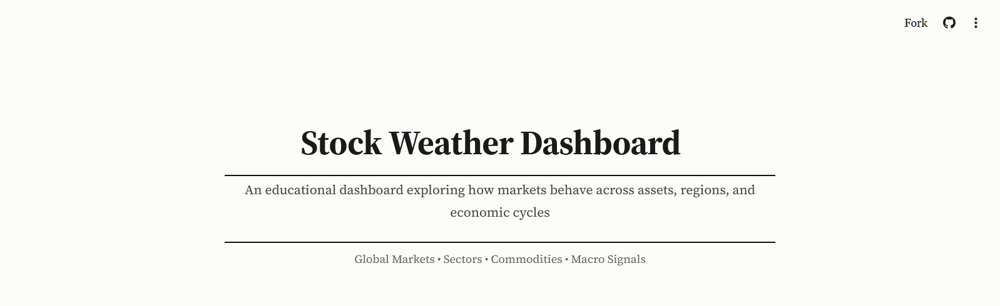

Stock Weather Dashboard
when markets whisper, listen
A dashboard analyzing market behavior and economic indicators throughout 2025. Transforms complex market patterns into clear, actionable insights through comparative visualizations and trend analysis.
Python · Pandas · Streamlit . Data APIs . Visualization